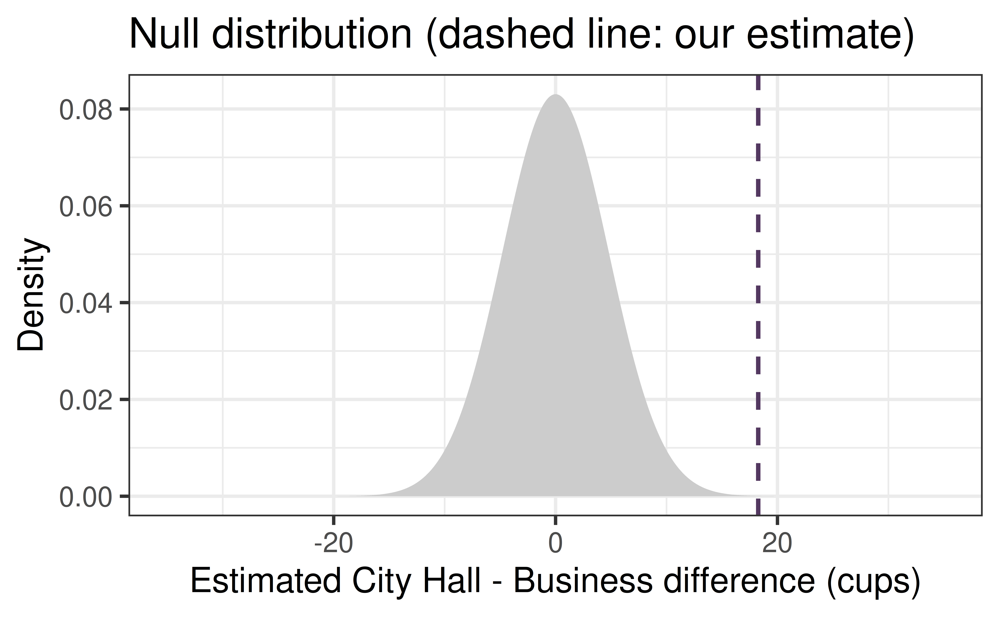
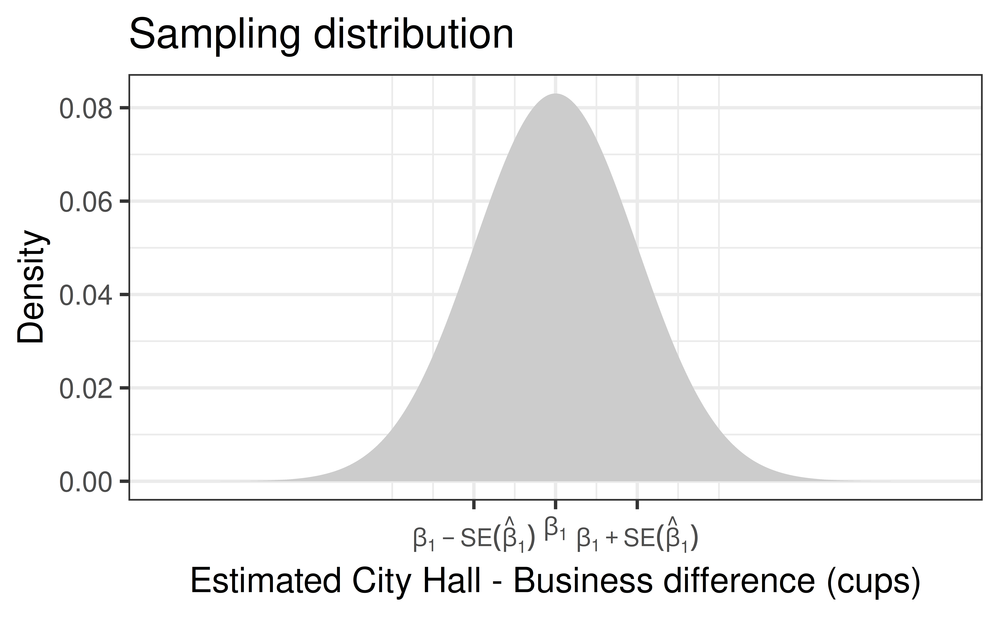
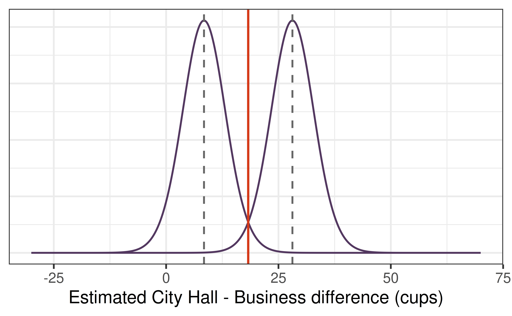
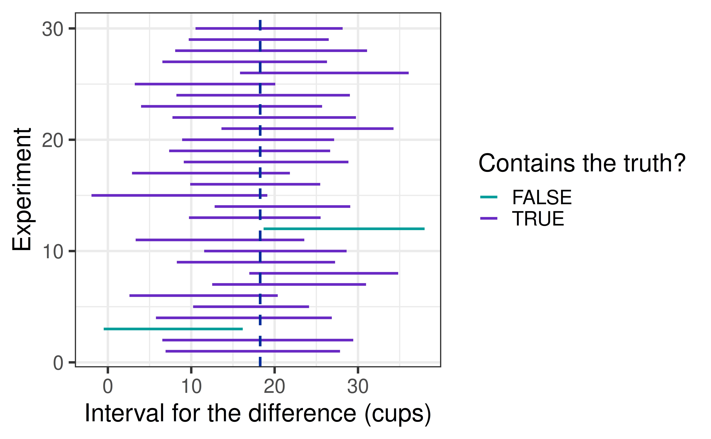
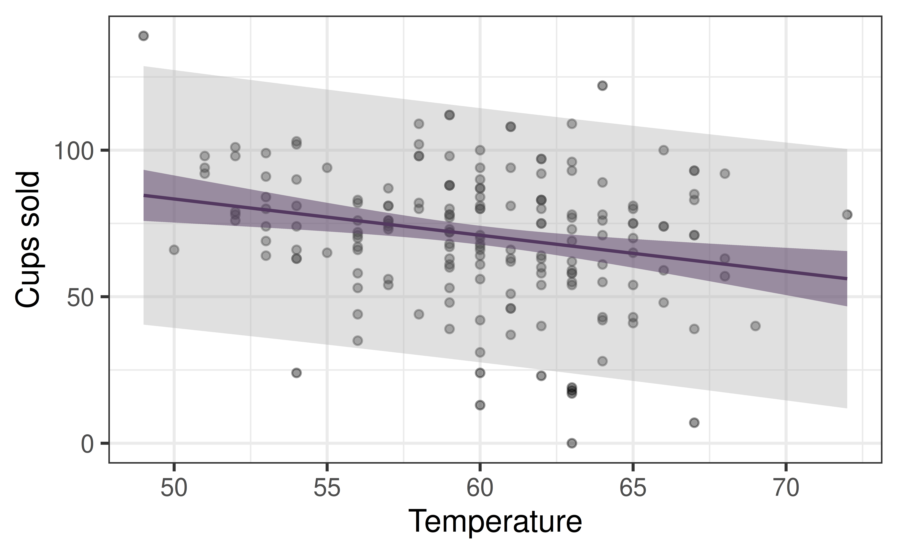

| term | estimate | std.error | statistic | p.value |
|---|---|---|---|---|
| (Intercept) | 71.27 | 3.4 | 20.98 | 0 |
| LocationCityHall | 18.27 | 4.8 | 3.80 | 0 |
Confidence Intervals
How sure are we about the estimate?
Prof. Eric Friedlander
Review: p-values and F-tests
Where we are
Last time we used the \(F\)-test to test whole batches of coefficients, and we found that the effect of Location on Sales depends on TimeOfDay.

A p-value tells us whether a coefficient could be 0, but not how big it is. At Lunch, City Hall sells about 18 more cups than the Business District. Jo’s gas costs $15 and each cup sells for $3. Should Jo drive?
The problem with one number
The estimate for LocationCityHall is 18.3 cups, from only 15 days at each location.
If Jo ran the experiment again, would they get exactly 18.3 again? Would the answer be 10? 30? 5?
A confidence interval gives a range of plausible values for the true difference, based on how much the estimate varies from sample to sample.
From null distribution to sampling distribution
Remember the null distribution
From Lecture 11: if \(H_0: \beta_1 = 0\) is true, then \(\hat\beta_1\) is approximately normal, with mean 0 and standard deviation equal to its standard error, here \(SE(\hat\beta_1) =\) 4.8.

Why is the middle of this distribution at 0?
Because we assumed the \(\beta_1\) is 0 (i.e. there is no effect of Location on Sales). If nothing is going on, estimates scatter around 0 from sample to sample, just by chance.
What if the truth is not 0?
Suppose the true difference were \(\beta_1 = 10\) cups. If Jo ran the experiment many times, where would the estimates be centered? What if the true difference were \(\beta_1 = 25\)?
The sampling distribution of \(\hat\beta_1\) is centered at the true \(\beta_1\), with the same spread, \(SE(\hat\beta_1)\). The null distribution is just the special case \(\beta_1 = 0\).
Scale for x is already present.
Adding another scale for x, which will replace the existing scale.
The catch: we don’t know the true \(\beta_1\), so we don’t know where to center the distribution.
Which true values are plausible?
We know where our estimate landed. Slide the sampling distribution to different true values. The shaded middle 95% is where estimates usually fall.
{
const pts = ci_z.map((z, i) => ({x: beta + z * ci_se, y: ci_d[i] / ci_se, mid: Math.abs(z) <= ci_tstar}));
const inside = Math.abs(ci_est - beta) <= ci_tstar * ci_se;
const col = inside ? "#533860" : "#d53a19";
const plot = Plot.plot({
width: 900, height: 260, marginBottom: 30, style: {fontSize: "18px"},
x: {domain: [-40, 70], label: null},
y: {axis: null, domain: [0, 1.2 * ci_dmax]},
marks: [
Plot.areaY(pts.filter(p => p.mid), {x: "x", y: "y", fill: "#533860", fillOpacity: 0.3, clip: true}),
Plot.line(pts, {x: "x", y: "y", stroke: "#533860", clip: true}),
Plot.ruleX([beta], {stroke: "grey", strokeDasharray: "4"}),
Plot.ruleX([ci_est], {stroke: col, strokeWidth: 3}),
// beta_1 above the dotted line (moves with the slider)
Plot.text([{x: beta, y: 1.08 * ci_dmax}], {x: "x", y: "y", text: ["β"], fill: "grey", textAnchor: "middle"}),
Plot.text([{x: beta, y: 1.08 * ci_dmax}], {x: "x", y: "y", text: ["₁"], fill: "grey", textAnchor: "start", dx: 7, dy: 4}),
// "our estimate beta-hat_1" next to the estimate line, hat drawn by hand
Plot.text([{x: ci_est, y: 0.3 * ci_dmax}], {x: "x", y: "y", text: ["our estimate"], fill: col, textAnchor: "end", dx: -22}),
Plot.text([{x: ci_est, y: 0.3 * ci_dmax}], {x: "x", y: "y", text: ["β"], fill: col, textAnchor: "middle", dx: -9}),
Plot.text([{x: ci_est, y: 0.3 * ci_dmax}], {x: "x", y: "y", text: ["^"], fill: col, textAnchor: "middle", dx: -9, dy: -5}),
Plot.text([{x: ci_est, y: 0.3 * ci_dmax}], {x: "x", y: "y", text: ["₁"], fill: col, textAnchor: "start", dx: -3, dy: 4})
]
});
return html`<div>${plot}<div style="text-align: center; font-size: 0.8em;">Estimated City Hall - Business difference (cups)</div></div>`;
}html`<p style="font-size: 0.9em; color: ${Math.abs(ci_est - beta) <= ci_tstar * ci_se ? "#533860" : "#d53a19"}"><b>Our estimate is ${(Math.abs(ci_est - beta) / ci_se).toFixed(2)} standard errors from β₁ = ${beta.toFixed(1)}:</b> ${Math.abs(ci_est - beta) <= ci_tstar * ci_se ? "a plausible value (inside the middle 95%)." : "not plausible (outside the middle 95%)."}</p>`Start at 0. Slide right until our estimate lands inside the middle 95%. Keep going: where does it fall out the other side? Write down both values.
The plausible values are the interval

A 95% confidence interval is every true value whose sampling distribution puts our estimate (red line) in its middle 95%. The two extreme values are the interval’s endpoints.
At each endpoint, how many standard errors away is our estimate? What does that tell you about how to compute the endpoints directly?
The formula-based interval
From a standard error to an interval
The slider stopped exactly \(t^*\) standard errors from our estimate on each side. From Lecture 11, \((\hat\beta_1 - \beta_1)/SE(\hat\beta_1)\) follows a \(t\) distribution, so the endpoints are:
\[ \hat\beta_1 \;\pm\; t^* \times SE(\hat\beta_1) \]
where \(t^*\) cuts off the middle 95% of a \(t\) distribution with \(n - p\) degrees of freedom.
The confidence level is the percentage of the sampling distribution we call “plausible”: the middle 95% for a 95% interval, the middle 90% for a 90% interval, and so on. A different level means a different \(t^*\).
In R
| term | estimate | std.error | statistic | p.value | conf.low | conf.high |
|---|---|---|---|---|---|---|
| (Intercept) | 71.27 | 3.4 | 20.98 | 0 | 64.31 | 78.22 |
| LocationCityHall | 18.27 | 4.8 | 3.80 | 0 | 8.43 | 28.11 |
By default conf.int = TRUE gives a 95% interval. Change the confidence level with conf.level:
| term | estimate | std.error | statistic | p.value | conf.low | conf.high |
|---|---|---|---|---|---|---|
| (Intercept) | 71.27 | 3.4 | 20.98 | 0 | 65.49 | 77.04 |
| LocationCityHall | 18.27 | 4.8 | 3.80 | 0 | 10.10 | 26.44 |
Do conf.low and conf.high match the two values you found with the slider? Is the 90% interval wider or narrower than the 95% interval? Why?
What does “95% confident” mean?
Interpreting an interval
Which of these is correct?
- There is a 95% chance that the true difference is between 8.4 and 28.1.
- 95% of the Lunch shifts had a difference in this range.
- If we repeated the experiment many times and made an interval each time, about 95% of the intervals would contain the true difference.
Only 3 is right. The true difference is a fixed number. The interval is what changes from sample to sample.
Analogy: Fishing
- Fish = true \(\beta_1\)
- Net = confidence interval
- Confidence level (i.e. 95%) = size of net
Simulating the “95%”
Let’s pretend our fitted model is the truth. We run the experiment 1000 times, make a 95% interval each time, and count how often the interval contains the true difference.
[1] 0.958
What makes an interval narrow?
Width
The width of a \(t\) interval is \(2 \times t^* \times SE(\hat\beta_1)\). A narrow interval means a precise estimate.
| Days per location | Average interval width |
|---|---|
| 5 | 37.5 |
| 10 | 24.7 |
| 15 | 19.7 |
What happens to the width as we collect more data? What other things should make the interval narrower? (Hint: think back to power in Lectures 14 and 15.)
- More data: smaller \(SE\).
- Less noise (\(\hat\sigma_\epsilon\)): smaller \(SE\).
- A lower confidence level (90% instead of 95%): smaller \(t^*\), but a worse guarantee.
Intervals in MLR
Note that, just like p-values, confidence intervals for coefficients depend on which other variables are in the model.
| term | estimate | std.error | statistic | p.value | conf.low | conf.high |
|---|---|---|---|---|---|---|
| (Intercept) | 119.75 | 16.39 | 7.31 | 0.00 | 87.40 | 152.11 |
| Temperature | -0.62 | 0.27 | -2.26 | 0.02 | -1.16 | -0.08 |
| LocationCityHall | -4.16 | 3.31 | -1.26 | 0.21 | -10.70 | 2.38 |
| LocationPark | 11.48 | 3.23 | 3.56 | 0.00 | 5.11 | 17.86 |
| LocationZoo | -17.63 | 3.29 | -5.36 | 0.00 | -24.13 | -11.14 |
| TimeOfDayLunch | -0.76 | 2.80 | -0.27 | 0.79 | -6.29 | 4.77 |
| TimeOfDayMorning | -26.21 | 2.80 | -9.37 | 0.00 | -31.73 | -20.69 |
The interval for the Temperature slope moved when we added Location and TimeOfDay. Why? Does Jo’s conclusion about temperature change?
Prediction intervals
Two different questions
Jo is deciding whether to drive to City Hall for Lunch. There are two things Jo might ask:
- What is the average number of cups sold at City Hall at Lunch? (a confidence interval for the mean)
- How many cups will I sell next Tuesday at City Hall? (a prediction interval for one new shift)
Confidence interval
Both intervals are centered at the same value. Why is the prediction interval so much wider? Which one would you use to plan next Tuesday?
Why is the prediction interval wider?
A single shift = the true mean plus random noise:
\[ y_{\text{new}} = \underbrace{\beta_0 + \beta_1 x}_{\text{what we estimate}} + \underbrace{\epsilon}_{\text{shift-to-shift noise}} \]
- The confidence interval only accounts for uncertainty in our estimate of the coefficients. It shrinks to 0 width as \(n\) grows.
- The prediction interval also accounts for the noise \(\epsilon\) in one new observation:
\[ \hat y \;\pm\; t^* \sqrt{\hat\sigma_\epsilon^2 + SE(\hat y)^2} \]
What happens to each interval if we collect 10,000 more shifts? Can a prediction interval ever get narrower than about \(\pm 2\hat\sigma_\epsilon\)?
Both intervals in a plot

The purple band is the confidence interval for the mean, the grey band is the prediction interval for one new shift. Roughly what fraction of the points should fall inside each band?
A 95% prediction interval should contain about 95% of new observations. A 95% confidence interval contains the true mean 95% of the time.
Activity: AE 21
Back to your pilot data. Paste in your code from AE 19 first, then:
- Part 1: get the 95% interval for each coefficient, interpret your primary variable’s interval, and compare it across
simple_fitandadd_fit. - Part 2: change the confidence level and interpret what “95% confident” means.
- Part 3: get a confidence interval and a prediction interval for a new observation, and explain why the prediction interval is wider.
- Part 4: what would it take to get a narrower interval? Propose a rough sample size for your full study (this feeds into your Project 2: Power write-up).
Recap
- A confidence interval gives plausible values for a parameter, based on how much the estimate varies from sample to sample.
- The interval is every true value that would make our estimate unsurprising: \(\hat\beta \pm t^* \cdot SE\).
- “95% confident” is a statement about the procedure: about 95% of intervals made this way contain the truth.
- An interval shows both whether an effect is detectable (does it contain 0?) and how big it could be.
- A prediction interval is for one new observation, so it adds the noise \(\hat\sigma_\epsilon\) and is always wider than the confidence interval for the mean.
- Intervals get narrower with more data and less noise, so the width of your pilot interval helps you plan the sample size for your full study.